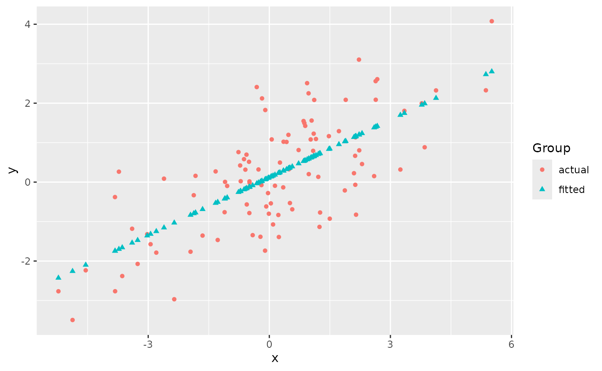
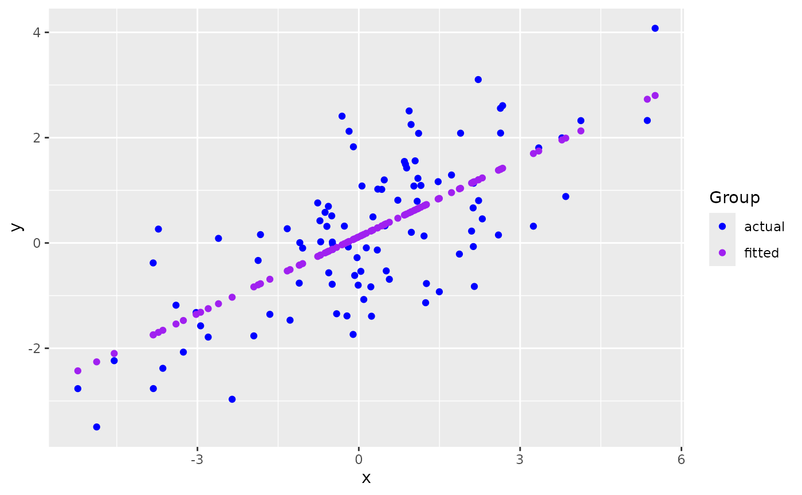
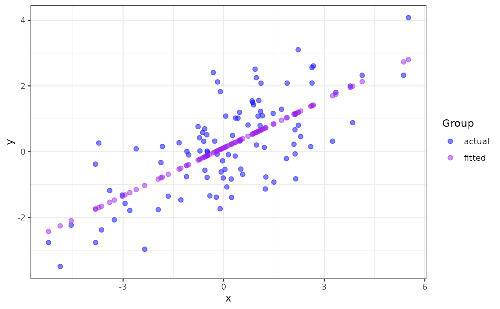

ggmatplot is a quick and easy way of plotting the columns of two matrices or data frames against each other using ggplot2.
ggmatplot is built upon ggplot2, and its functionality is inspired by matplot. Therefore, ggmatplot can be considered as a ggplot version of matplot.
ggmatplot do?
Similar to matplot, ggmatplot plots a vector against the columns of a matrix, or the columns of two matrices against each other, or a vector/matrix on its own. However, unlike matplot, ggmatplot returns a ggplot object.
Suppose we have a covariate vector x and a matrix z with the response y and the fitted value fit.y as the two columns.
# vector x
x <- c(rnorm(100, sd = 2))
head(x)
#> [1] 1.4991417 -3.2880221 0.5002600 -1.1004952 -0.8691501 1.3746244
# matrix z
y <- x * 0.5 + rnorm(100, sd = 1)
fit.y <- fitted(lm(y ~ x))
z <- cbind(actual = y,
fitted = fit.y)
head(z)
#> actual fitted
#> 1 -1.2829111 0.6369209
#> 2 -1.7536205 -1.4482800
#> 3 -1.9904392 0.2018263
#> 4 -3.0984414 -0.4954334
#> 5 -1.0665031 -0.3946637
#> 6 0.5138058 0.5826834ggmatplot plots vector x against each column of matrix z using the default plot_type = "point". This will be represented on the resulting plot as two groups, identified using different shapes and colors.

The default aesthetics used to differentiate the two groups can be updated using ggmatplot() arguments. Since the two groups in this example are differentiated using their shapes and colors, the shape and color parameters can be used to change them. If we want points in both groups to have the same shape, we can simply set the shape parameter to a single value. However, if we want the points in the groups to be differentiated by color, we can pass a list of colors as the color parameter - but we should make sure the number of colors in the list matches up with the number of groups.
ggmatplot(x, z,
shape = "circle", # using a single shape over both groups
color = c("blue","purple") # assigning two colors to the two groups
)
Since ggmatplot is built upon ggplot2 and creates a ggplot object, ggplot add ons such as scales, faceting specifications, coordinate systems, and themes can be added on to plots created using ggmatplot too.
Each plot_type allowed by the ggmatplot() function is also built upon a ggplot2 geom (geometric object), as listed here. Therefore, ggmatplot() will support additional parameters specific to each plot type. These are often aesthetics, used to set an aesthetic to a fixed value, like size = 2 or alpha = 0.5. However, they can also be other parameters specific to different types of plots.

This list of examples includes other types of plots we can create using ggmatplot.
ggmatplot over ggplot2?
ggplot2 requires wide format data to be wrangled into long format for plotting, which can be quite cumbersome when creating simple plots. Therefore, the motivation for ggmatplot is to provide a solution that allows ggplot2 to handle wide format data. Although ggmatplot doesn’t provide the same flexibility as ggplot2, it can be used as a workaround for having to wrangle wide format data into long format and creating simple plots using ggplot2.
Suppose we want to use the iris dataset to plot the distributions of its numeric variables individually.
library(tidyr)
library(dplyr)
iris_numeric <- iris %>%
select(is.numeric)
head(iris_numeric)
#> Sepal.Length Sepal.Width Petal.Length Petal.Width
#> 1 5.1 3.5 1.4 0.2
#> 2 4.9 3.0 1.4 0.2
#> 3 4.7 3.2 1.3 0.2
#> 4 4.6 3.1 1.5 0.2
#> 5 5.0 3.6 1.4 0.2
#> 6 5.4 3.9 1.7 0.4If we were to plot this data using ggplot2, we’d have to wrangle the data into long format before plotting.
iris_numeric_long <- iris_numeric %>%
pivot_longer(cols = everything(),
names_to = "Feature",
values_to = "Measurement")
head(iris_numeric_long)
#> # A tibble: 6 × 2
#> Feature Measurement
#> <chr> <dbl>
#> 1 Sepal.Length 5.1
#> 2 Sepal.Width 3.5
#> 3 Petal.Length 1.4
#> 4 Petal.Width 0.2
#> 5 Sepal.Length 4.9
#> 6 Sepal.Width 3
iris_numeric_long %>%
ggplot(aes(x = Measurement,
color = Feature)) +
geom_density()But the wide format data can be directly used with ggmatplot to achieve the same result. Note that the order of the categories in the legend follows the column order in the original dataset.
ggmatplot(iris_numeric, plot_type = "density", alpha = 0)Suppose we also have the following dataset of the monthly totals of international airline passengers(in thousands) from January 1949 to December 1960.
AirPassengers <- matrix(AirPassengers,
ncol = 12, byrow = FALSE,
dimnames = list(month.abb, as.character(1949:1960))
)
AirPassengers
#> 1949 1950 1951 1952 1953 1954 1955 1956 1957 1958 1959 1960
#> Jan 112 115 145 171 196 204 242 284 315 340 360 417
#> Feb 118 126 150 180 196 188 233 277 301 318 342 391
#> Mar 132 141 178 193 236 235 267 317 356 362 406 419
#> Apr 129 135 163 181 235 227 269 313 348 348 396 461
#> May 121 125 172 183 229 234 270 318 355 363 420 472
#> Jun 135 149 178 218 243 264 315 374 422 435 472 535
#> Jul 148 170 199 230 264 302 364 413 465 491 548 622
#> Aug 148 170 199 242 272 293 347 405 467 505 559 606
#> Sep 136 158 184 209 237 259 312 355 404 404 463 508
#> Oct 119 133 162 191 211 229 274 306 347 359 407 461
#> Nov 104 114 146 172 180 203 237 271 305 310 362 390
#> Dec 118 140 166 194 201 229 278 306 336 337 405 432If we want to plot the trend of the number of passengers over the years using ggplot2, we’d have to wrangle the data into long format. But we can use ggmatplot as a workaround.
First, we can split the data into two matrices as follows:
months: a vector containing the list of monthsnPassengers: a matrix of passenger numbers with each column representing a year
months <- rownames(AirPassengers)
nPassengers <- AirPassengers[, 1:12]Then we can use ggmatplot() to plot the months matrix against each column of the nPassengers matrix - which can be more simply understood as grouping the plot using each column(year) of the nPassengers matrix.
ggmatplot(
x = months,
y = nPassengers,
plot_type = "line",
size = 1,
legend_label = c(1949:1960),
xlab = "Month",
ylab = "Total airline passengers (in thousands)",
legend_title = "Year"
) +
theme_minimal()